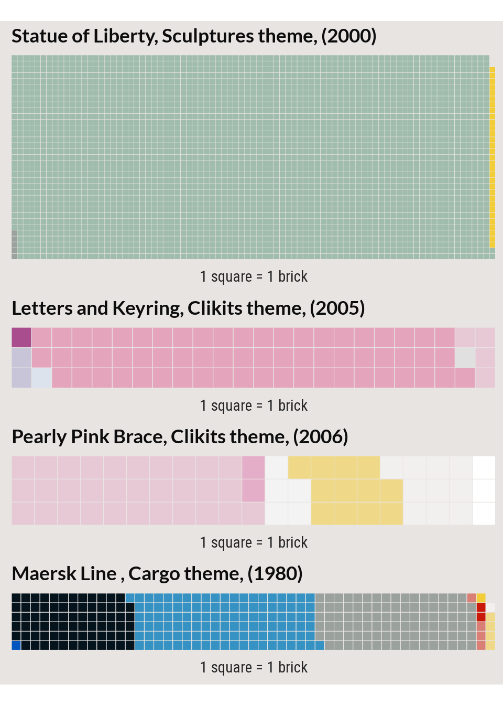
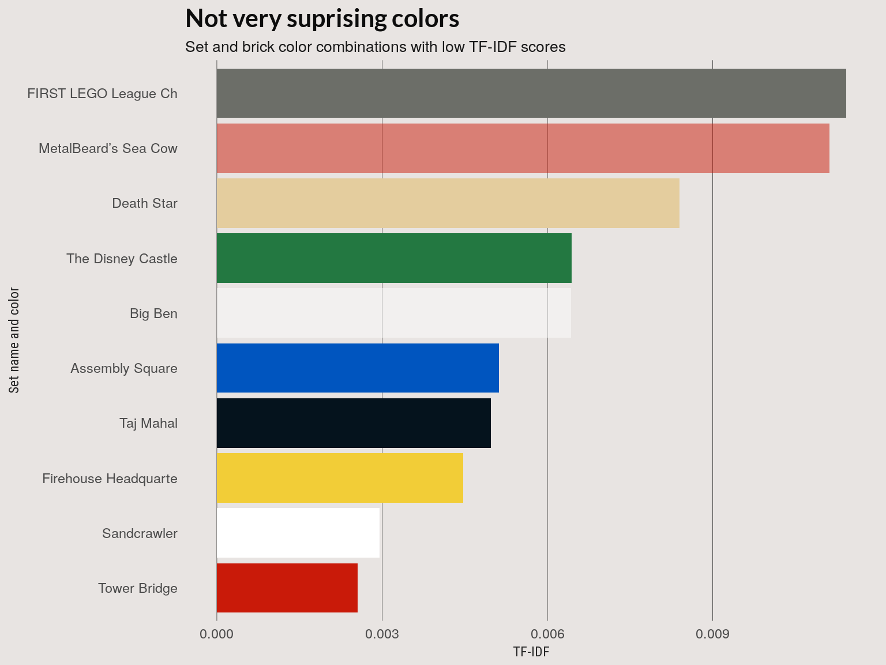
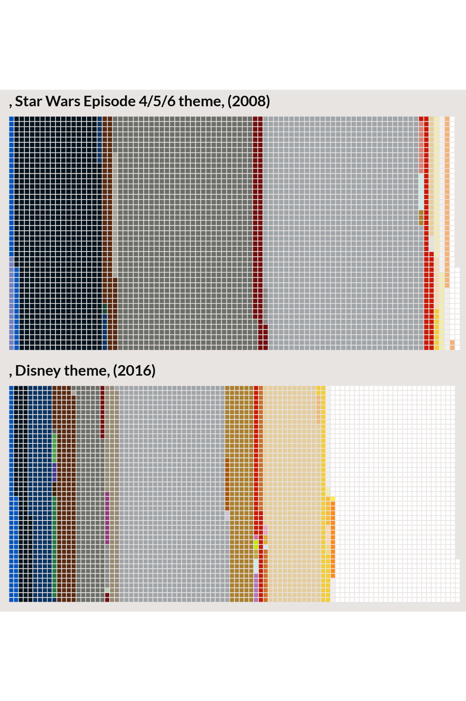

TF-IDF Analysis
Nathanael Aff
Last updated: 2017-09-13
Code version: 880af53
Analyzing color frequency with TF-IDF
From the frequency plot, it’s clear a few primary colors along with black, gray, and white make up the majority of brick colors. In text mining, one might remove some set of stop words that are frequent in all texts but add no meaning to a statistical analysis of the text. In our case, there are just 125 unique colors and I did not use a color stop list.
TF-IDF is one way to look at words that are more meaningful to each document. Word frequency per document is weighted(inversely) by the number of documents the word occurs in. The TF-IDF score shows what terms are unique to a particular document.
We can adopt this directly to the Lego set to see what colors are unique to particular Lego sets.
In the preceding code, we make a summary table of word counts for sets and the corpus and the tidytext function computes the TF, IDF and TF-IDF scores.
devtools::load_all()
knitr::read_chunk(here::here("code", "tf-idf.R"))This code follows the code in tidytext mining
library(ggplot2)
library(dplyr)
library(waffle)
library(tm)
library(tidytext)
library(purrr)
# Compute tf-idf.
load_data(sample_data = FALSE)Connecting to database
Assigning themes to theme_df
Assigning sets to sets_df
Retrieving dataset form db
Disconnecting from database
Assigning full set set inventories to 'set_colors' create_tables()Assigning values to total_words
Assigning tidy set and color dataframe to 'set_words'
Creating sparse document term matrix (tm-package) and assigning to 'dtm' Top TF-IDF
The top TF-IDF scores associated with a set-color pair should show us the most distinctive color relative to a set.
pal <- unique(set_colors$rgba)
names(pal) <- unique(pal)
# High TF-IDF scores
top <- set_words %>% arrange(tf_idf) %>% mutate(rgba = factor(rgba, levels = unique(rgba))) %>%
# Remove sand brick and sets with few pieces
filter(n > 20, rgba != "#D67572FF") %>% tail(50) %>% arrange(desc(tf_idf))
# Hackery
top <- top[match(unique(top$rgba), top$rgba), ] %>% arrange(tf_idf)
top$rgba <- factor(top$rgba, top$rgba)
top <- tail(top, 10)
bgcol = "#e8e4e2"
# Plot highest tf-idf sets
top %>% ggplot() + geom_bar(aes(x = rgba, y = tf_idf, fill = rgba), stat = "identity",
show.legend = FALSE) + scale_fill_manual(values = pal) + scale_x_discrete(labels = top$name) +
labs(x = "Set name and color", y = "TF-IDF score", title = "Colors distinct to a set",
subtitle = paste0("Set and brick color combinations with high TF-IDF scores")) +
geom_hline(yintercept = c(0, 1, 2, 3), size = 1.5, col = bgcol) + coord_flip() +
legolda::theme_bar()Top 10 TF-IDF set-color combinations
bgcol <- "#e8e4e2"
out <- top %>% select(set_num) %>% left_join(set_colors) %>% select(name, theme,
year, set_num, rgba) %>% group_by(theme, name, set_num, year) %>% tidyr::nest() %>%
mutate(counts = purrr::map(data, table))
# Waffle plots
iron(waff(out[10, ], size = 0.01, rows = 30, nchr = 20, bgcol = bgcol), waff(out[9,
], size = 0.2, rows = 3, nchr = 20, bgcol = bgcol), waff(out[8, ], size = 0.2,
rows = 3, nchr = 17, bgcol = bgcol), waff(out[7, ], size = 0.2, rows = 10,
nchr = 12, bgcol = bgcol))
Low TF-IDF set-term combinations
Set-color combinations are should correspond to colors that are common colors that are also common in a set. Here we make a plot similar to the last two but for set-colors combinations with the lowest TF-IDF scores.
The lowest TF-IDF scores are associated with big sets with colors that show up in many sets.
# Set-color combinations with low TF-IDF
low <- set_words %>% arrange(tf_idf) %>% mutate(rgba = factor(rgba, levels = unique(rgba))) %>%
# Remove red sand brick sets
filter(n > 20, rgba != "#D67572FF") %>% head(200) %>% filter(!is.na(rgba)) %>%
arrange(tf_idf)
low <- low[match(unique(low$rgba), low$rgba), ]
low$rgba <- factor(low$rgba, low$rgba)
low <- low[1:10, ]
low %>% ggplot() + geom_bar(aes(x = rgba, y = tf_idf, fill = rgba), stat = "identity",
show.legend = FALSE) + scale_fill_manual(values = pal) + scale_x_discrete(labels = low$name) +
labs(x = "Set name and color", y = "TF-IDF", title = "Not very suprising colors",
subtitle = "Set and brick color combinations with low TF-IDF scores") +
geom_hline(yintercept = c(0, 0.003, 0.006, 0.009), size = 1.5, col = bgcol) +
coord_flip() + legolda::theme_bar()
out <- low %>% select(set_num) %>% left_join(set_colors) %>% select(name, theme,
year, set_num, rgba) %>% group_by(theme, name, set_num, year) %>% tidyr::nest() %>%
mutate(counts = purrr::map(data, table))
iron(waff(out[10, ], size = 0.1, rows = 30, nchr = 17, bgcol = bgcol), waff(out[9,
], size = 0.1, rows = 36, nchr = 20, bgcol = bgcol))
iron(waff(out[8, ], size = 0.1, rows = 45, nchr = 15, bgcol = bgcol), waff(out[7,
], size = 0.2, rows = 45, nchr = 18, bgcol = bgcol))